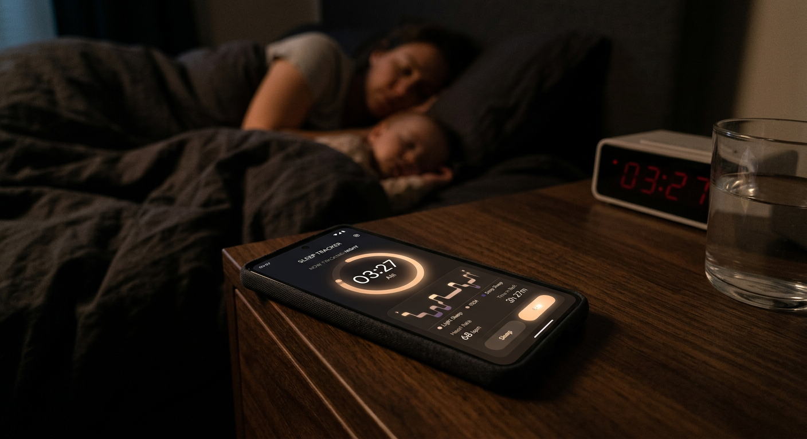

おはようございます。
昨晩、いびきナビでの初めての計測、お疲れさまでした。「いびきがうるさい」と言われて気になった方へ。まずは昨晩のデータを見てみましょう。
数字だけ見てもピンとこないですよね。そこで、身の回りの音と比べてみましょう。
30dB ─ ささやき声
40dB ─ 図書館
50dB ─ 静かなオフィス
60dB ─ 普通の会話
--dB ─ あなたのいびき
70dB ─ 掃除機の音
80dB ─ 地下鉄の車内
あなたのいびきは最大--dB。身の回りの音と比べてみると、けっこう気になる音量です。
「自分、そんなにいびきかいてたのか...」と少し驚いたかもしれません。
でも、安心してください。日本人男性の約24%が習慣的にいびきをかいているという調査結果があります。つまり、男性の4人に1人がいびきをかいているわけです。
年代別に見ると、さらにその割合は上がります。40代以降の男性では、3人に1人以上が何らかのいびきの症状を持っているとされています。
いびきをかくこと自体が「異常」なわけではありません。ただ、いびきの「大きさ」や「パターン」には個人差があります。そして、その違いが大切なんです。
出典: 日本呼吸器学会「成人の睡眠呼吸障害に関する疫学調査」/ Benjafield et al., The Lancet Respiratory Medicine, 2019

1日の計測だけでは、たまたまその日だけ大きかった（あるいは小さかった）という可能性もあります。
お酒を飲んだ日と飲まなかった日、疲れている日とそうでない日では、いびきの出方も変わります。
今日のところは、「自分のいびきはだいたいこれくらいなんだな」という目安として受け止めてもらえれば大丈夫です。
3日分のデータが揃ったら、
あなたのいびきタイプを診断します。
まずはデータを積み重ねましょう。
データが増えるほど、分析の精度が上がります